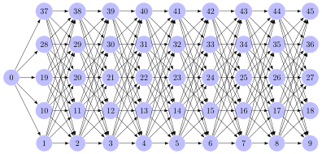

Order relations: the intuition
- relations (basic notation)
- sets (basic notation)
A binary relation \(R\) can be combined with a set \(S\) to define an ordered set. Think of it as follows: whereas the elements of a normal set are just floating around in limbo with no ties between them, an ordered set uses some ordering relation \(R\) to lock its elements into place. This unit only covers the intuition behind orders, and the formal definitions are left to the next one.
Examples of ordered sets
The standard way of reciting the alphabet in English can be regarded as an order on the set \(\left \{ a,b,c,d,e,f,g,h,i,j,k,l,m,n,o,p,q,r,s,t,u,v,w,x,y,z \right \}\).
The prototypical example of an order is the “equal or less than” relation \(\leq\) over the set \(\mathbb{N}\) of natural numbers. While the set of natural numbers is unordered, we can use \(\leq\) to define the usual order over it with \(0\) at the beginning, followed by \(1\), which is followed by \(2\), and so on.
We can draw this as a graph as in the figure below, where each node is a number and we draw arrows between them to indicate their order. For readability, we include the minimal number of arrows that are needed to infer the order relation. For instance, we do not include an arrow from \(0\) to \(2\) because we already have an arrow from \(0\) to \(1\) and another from \(1\) to \(2\), and we know that \(0 \leq 1\) and \(1 \leq 2\) implies \(0 \leq 2\) because of how the relation \(\leq\) works.

However, the full definition of \(\leq\) as a set of statements of the form \(x \leq y\) would still have to include \(0 \leq 2\), \(0 \leq 3\), and so on, even though those could in principle be inferred. When we look at a relation of a set of such statements, the set always contains all statements.
We could have defined a very different kind of order over \(\mathbb{N}\). Let \(f\) be a function that maps each natural number \(x\) to the recursive sum of its digits. That is to say, \(f\) first sums up all the digits, then sums up the digits of the sum, and so on, until only a single digit remains. The computation for \(537\), for instance, would proceed as follows:
- \(537: 5 + 3 + 7 = 15\)
- \(15: 1 + 5 = 6\)
Consequently, \(f(537) = 6\). Note that \(f(537) = f(357) = f(753) = f(861) = f(96) = f(15) = f(6)\), so many different numbers have the same sum of digits. Now we define an order \(R\) such that \(x \mathrel{R} y\) iff \(f(x) < f(y)\). That’s a very different way of ordering the natural numbers, but it’s still an order.
We can again visualize this order in terms of nodes connected by arrows. For simplicity, we only consider the natural numbers from 0 to 45.

Intuitively speaking, the order splits the set of natural numbers into 10 layers such that each layer represents one of the ten possible values for the recursive digit sum function: 0, 1, 2, 3, and so on, all the way up to 9. Each layer consists of all the numbers with the corresponding recursive digit sum. For example, the layer of numbers (from 0 to 45) whose recursive digit sum is 1 contains the numbers 1, 10, 19, 28, and 37. None of these numbers are ordered with respect to each other, which is why they aren’t connected to each other by arrows. But each number in this layer is ordered before each number in the layer of numbers with recursive digit sum 2, and thus we have an arrow from each number in layer 1 to each number in layer 2. It is also true that each number in layer 1 is ordered before each number in layer 3, but again we do not include these arrows in the figure because that would unnecessary clutter to what is already a very busy figure.
If we were to expand the figure to properly depict this order for all natural numbers, the figure would still have the geometry above in terms of 10 layers where layers for lower digit sums are ordered before layers with higher digit sums. What would change, though, is that each layer would have to contain infinitely many numbers. For instance, layer 1 would contain 1, 10, 19, 28, 37, 46, 55, 64, 73, 82, 91, 100, 109, 118, 127, 136, and so on. Obviously it is impossible to actually draw an infinitely large layer, which is why the figure only depicts an illustrative part of the whole order.
Not every binary relation is an order
The essential aspect of orders is that they allow us to say that some element is in some sense less relevant or prominent than some other element. The \(\leq\) relation, for instance, orders numbers from small to big. We are effectively ranking the elements of the set.
Not every binary relation gives rise to such a ranking.
Suppose that we define the following binary relation \(R\) over the set \(\left \{ 1,2,3 \right \}\) of person features: \(1 \mathrel{R} 2\), \(1 \mathrel{R} 3\), \(2 \mathrel{R} 3\), and \(3 \mathrel{R} 2\). That’s not really a ranking. Yes, we can see that \(1\) is ranked higher than \(2\) and \(3\) (or lower, depending on how you look at it). But \(2\) and \(3\) are not clearly ranked with respect to each other. On the one hand \(2\) is higher than \(3\), and on the other hand \(3\) is higher than \(2\). We have a kind of cycle, and that’s not okay for orders.
Now consider the successor relation \(S\) over natural numbers. Here \(x \mathrel{S} y\) iff \(y = x + 1\). So we have \(0 \mathrel{S} 1\), \(1 \mathrel{S} 2\), \(2 \mathrel{S} 3\), and so on. Even though this might look like it generates the same order as \(<\), it’s not an order at all. The problem is that the relation does not relate elements that should be related if this were an actual ranking.
Just look at \(0 \mathrel{S} 1\) and \(1 \mathrel{S} 2\). This tells us that \(0\) is ranked higher than \(1\), and \(1\) is ranked higher than \(2\) (again, it doesn’t matter if we say “ranked higher” or “ranked lower”). But in a normal ranking, this would mean that \(0\) is also ranked higher than \(2\). Yet we do not have \(0 \mathrel{S} 2\). According to \(S\), \(0\) and \(2\) are completely unrelated, contradicting our intuitions about how a ranking ought to work. In a ranking, it is always the case that if \(x\) outranks something that outranks \(y\), then \(x\) outranks \(y\).
For this reason, an ordered set has to use a binary relation that is in some sense ranking-like. Among other things, this means that the relation can’t contain loops or cycles, and it must not have gaps that would be filled in if it were actually a ranking. If this seems awfully fuzzy to you, just focus on the intuition for now and check out the formal definitions in the next unit.
Linear and partial orders
There are numerous types of orders, and the next unit covers them in detail. For now, it suffices to be aware of the major split between total orders and partial orders. Total orders are also called linear orders, which conveys the essential intuition behind them: a relation is a total order if it can be represented by writing all elements in a single line. A partial order is more flexible and allows some elements to be unordered with respect to each other, as long as this does not violate our requirement that the relation must be ranking-like.
Let’s consider once more the examples above. The relation \(\leq\) defines a total order over the set of natural numbers as there are no two elements that are unordered with respect to each other. No matter which two numbers \(x\) and \(y\) we look at, we either have \(x \leq y\) or \(y \leq x\). And if we have both \(x \leq y\) and \(y \leq x\), then \(x\) and \(y\) must be the same number. So we can’t have any odd situations like a loop from 10 back to 5. Hence we do indeed end up with a single line. And if we have a single line, we have a linear order, i.e a total order.
The relation \(R\), on the other hand, only defines a partial order. While we do still have a rough order between numbers based on their recursive digit sum, numbers with the same digit sum are unordered with respect to each other. This can be seen clearly in the corresponding figure. We are still dealing with some kind of ranking, though, as all elements in the \(n\)-th column of the figure are ranked higher than all the elements in the columns to their right. We still have a ranking of sorts, there’s just a lot elements that occupy the same rank.
Recap
- Binary relations can be used to induce an order over a set, yielding an ordered set (e.g. the natural numbers with \(\leq\)).
- Orders must be ranking-like. They cannot contain any loops or cycles, and it must the case that if \(x\) outranks something that outranks \(y\), then \(x\) outranks \(y\).
- The order is total (or linear) iff all elements of the set are related to each other. Intuitively, total orders build lines.
- Partial orders allow some elements to be unordered with respect to each other. Intuitively, they cannot be represented by a single line and instead require more complex arrangements.